頂庄村位於線西鄉的西北方，地形平坦，是大肚溪口所沖積平原而成的一部份，
往東就是德興村，往南是線西村，西邊是彰濱工業區，北邊是伸港鄉的蚵寮村，夏季有著炎熱的高溫，冬季又有強勁的東北季風由海面直接吹來，一些在海邊的沙子
就會被吹到農田裡，為了防止風沙，村民們種植菅草保護農作物，這種環境就成了鳥類的生活場所，頂庄村的居民以前都是以農耕、捕魚、養鴨為主要的職業隨著工
業發展後，中小企業設立帶動地區經濟繁榮，近年來因加入WTO所受到的衝擊，社區居名開始朝精緻休閒農業、休閒馬場和鴨蛋研發改良的方向前進。
這是別人畫在牆壁上可以加強美化社區。
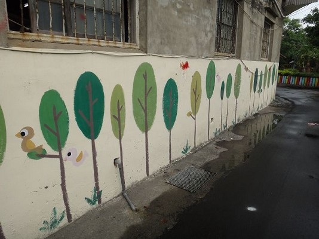
這是以前老人和年輕人會在槌球場玩，現在已經沒有人在這裡玩，只是剛好經過這裡休息的地方。
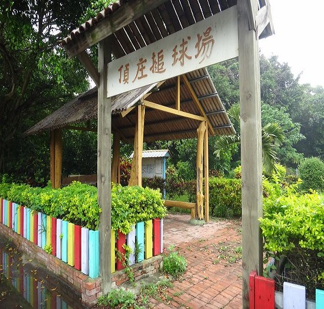
這棵大榕樹是老人休息的地方，下午可以看到老人騎著腳踏車或是騎著摩托車、走路到這裡泡茶聊天。
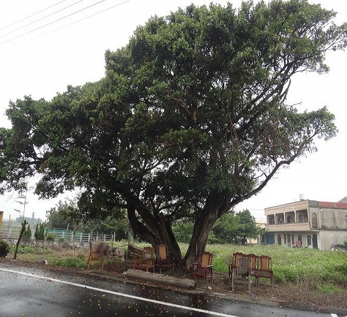
頂庄村村長
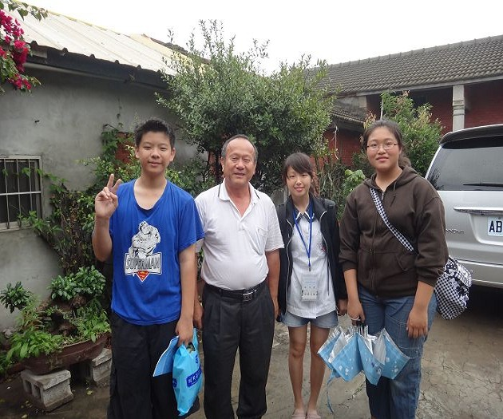
這個是以前人用水的東西，他的水是從地下水抽出來，所以水很涼。現在是少戶人家裡有的東西。
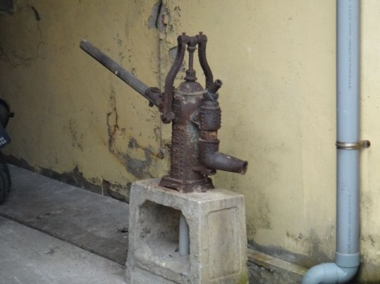
以前人放東西的櫥櫃。
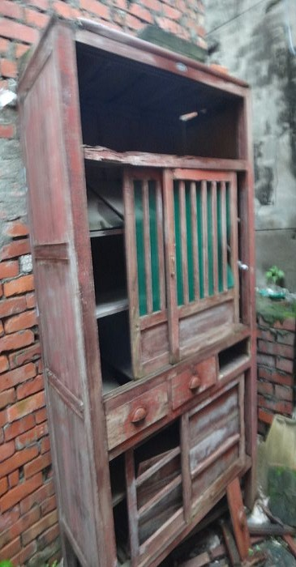
這裡可以曬大蒜。
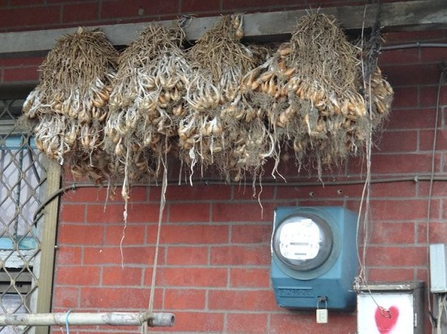
以前有錢人才有二樓，平民是沒有二樓的。
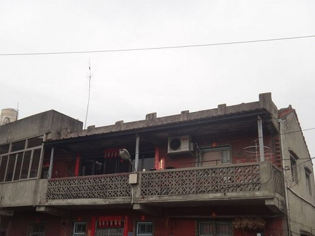
這間小房子是以前看醫生的小診所，以前人很愛打針，所以去的時候都跟醫生說我只要打針就好。
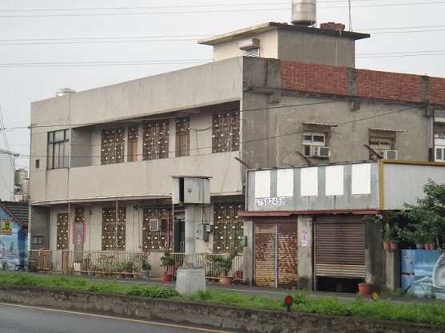
走在路上，看見一排只有一半的房子，而是因為當時的馬路非常狹窄，為了拓寬道路，因此只好把房子裁掉一些，至今還留在路邊。
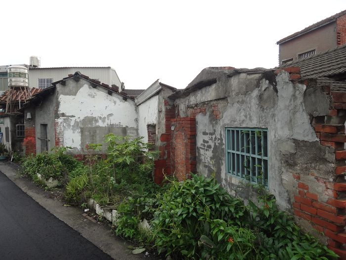
這是路邊大水溝的水閘門。
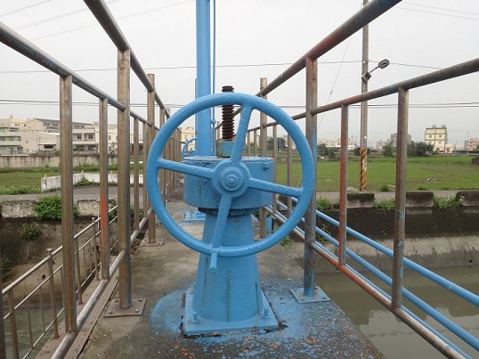
心得分享:
這個陪伴我多年的頂庄社區，讓我擁有了很多美好的回憶，這個地方有很多得地方都可以去探險，以前最喜會去的就是頂庄的生態池，
因為，每到了夏天，就可以跳進去游泳，不過，現在已經不能去了，因為，都長滿了雜草，而且還會有蛇，在草叢中虎視眈眈的看著我們，頂庄的古蹟也很多，還有
一棵百年老樹豎立在那邊，屹立不搖的站在那邊。
<--回頂庄村首頁 |